慧聪家电网：2018年3月19日，海信推出新品男神X空调，这款空调被称为是实现湿度精准控制、智能定制送风的第三代舒适变频空调。
随着行业发展及用户需求的升级，用户对空调的需求也已从最初的制冷制热、节能、静音等相对基本的需求，转向舒适健康等，而其最根本的需求最终可以归结为对空调全面舒适的要求。而从空调诞生之初便存在的“空调病”至今仍困扰着用户，消费需求从刚需的温控功能逐步发展到健康增益领域，受众群体从全年龄重点聚焦到儿童、孕妇、老人等群体，这就要求空调厂家在为用户带来全面舒适体验的空调产品打造上发力。海信男神X空调不仅能够通过独创的温湿双控技术，实现温度湿度的自由设置，其具有革新意义的360°旋转送风设计，能实现全角度送风，配合“风吹人、风避人”模式，实现了根据不同人群需求定制送风，配合语音智能体感操作的应用，全面提升用户舒适度体验。
男神般的外形
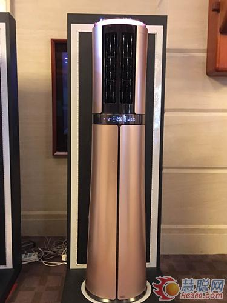
海信X男神空调高度有1.927米，以0.618黄金分割比例，具有“欧巴”般的大长腿，小蛮腰的设计不笨重，轻盈感十足。这个设计在符合人体工程学原理的同时，更适合中国人的身高操作。
空调采用亚克力丝印热弯工艺，3D纹理设计，通透立体。360°全方位送风设计，家中的每一个角落都可以感受到舒适风。
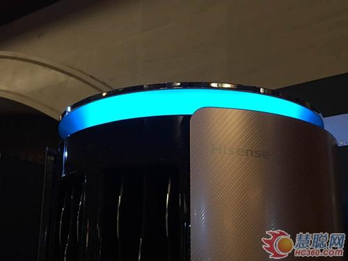
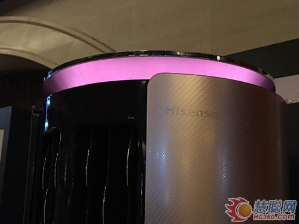
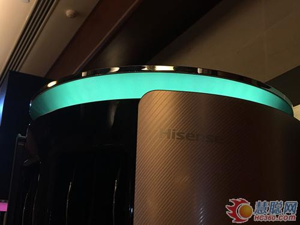
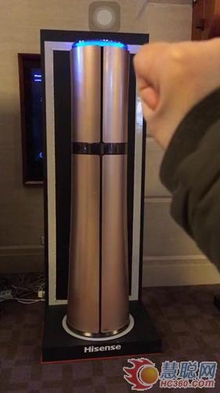
顶部的四色呼吸光，蓝色、橙色、绿色、深海蓝色分别对应制冷除湿、制热、送风、手势控制。
男神X“懂湿度”
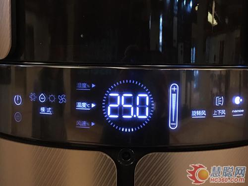
海信男神X空调能够在40%-60%范围内智能加湿，当室内湿度过低，水箱中无菌水通过水泵被输送到布水器，淋到湿膜顶部并向下渗透，形成水膜。当空气通过水膜的时候，水分自然蒸发并随风送入房间，为房间加湿。
值得注意的是这款空调的出风口位于机身1.4m以上，加湿除湿更便捷，同时也能照顾到房间的各角落。
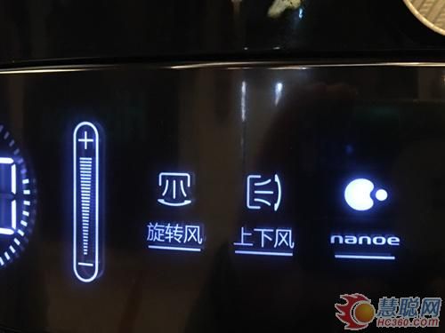
其纳米水离子技术可聚集空气中的水分，电离产生纳米级的水离子，具有美肤美发、消除异味、抑制过敏物质等功效，呵护家人健康。
同时，这款空调还能智能除湿，在40%-70%范围内自由设置湿度，也可一键润养，让房间内的湿度控制在人体舒适的程度。
随心炫
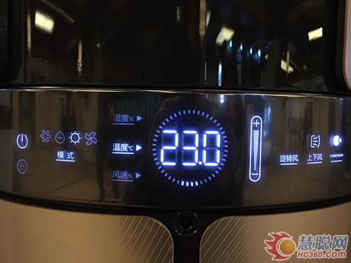
在海信男神X空调上有一个摄像头，可根据其反馈的人体位置，实现风吹人、风避人，满足不同人群对于空调的使用需求。
另外这个摄像头还支持手势控制空调，在人体在距离空调2m（±0.5）范围内的时候，可自动唤醒解锁键。同时，用户可以通过手势来实现开关机、温度、风向的调整。当然，这款空调业可以进行语音操作，通过语音来实现空调开关机、模式切换、温度调整、风量调节等功能。
在功能方面，海信男神X空调可实现风量无极调节，微小的风量增减都可以实现。如果用户希望自定义送风角度，这款空调提供了30°、60°、90°、120°、360°等几个送风角度可选。
内外机智能双清洁
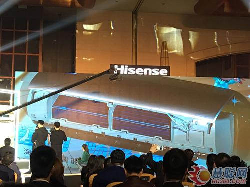
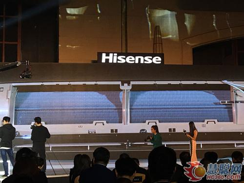
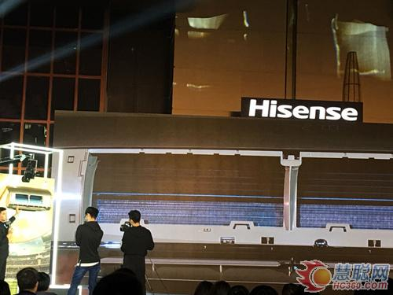
图：海信在发布会现场演示空调智能清洁过程
海信男神X空调是一台会给自己洗澡的空调，它采用智能双清洁技术，通过结霜、渗透包裹、膨胀剥离、化霜和烘干五个步骤，轻松实现室内外机双清洁。一般来讲，每半个月就可以进行一次空调清洁。
不仅以上这些，海信男神X空调还应用了获得国家专利的黄金频率分割技术和10HZ超低频运转技术，使空调在不同运行状态下，以实现最佳运转频率。QSD急速启动技术，可以让压缩机通过快速升频控制，快读制冷制热。
海信空调在将已男神X为代表的第三代舒适变频空调成功推向市场，在湿度精准控制、智能加湿除湿、360°送风等方面取得了突破，解决了对温度湿度有要求的用户痛点。
责任编辑：蔡丽娜